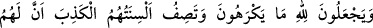

“Fakat” Allah onları bu yaptıkları sebebiyle hemen cezalandırmaz. “Onları” hilmi
ile muâmelede bulunarak nesillerinin üremesi veya azablarının artması için ömürlerini
yahut da azablarını “takdir edilen bir müddete kadar erteliyor.”
Takdir edilen “ecelleri geldiği zaman onlar” bu ecelden “ne bir saat” en kısa vakit
“geri kalabilirler ne de öne geçebilirler.” Müddet sona erdiğinde “öne alma” zaten
mümkün olmadığı halde bu cümlenin zikredilmesinin sebebi, mümkün olmayanları da
nazma dâhil ederek, insanın bu konuda herhangi bir muhayyerlik hakkının kesinkes söz
konusu olmadığını vurgulamak içindir.
Âyette azabın tehirini istedikleri halde onların bundan âciz olduklarına işâret vardır.
‘Sâat’ kelimesi, müddetin azlığı için meseldir.
62. Kendilerinin hoşlarına gitmeyen şeyleri Allah’a isnad ediyorlar. En güzel
sonucun kendilerinin olduğunu anlatan dilleri de yalan söylüyor. Hiç şüphesiz onlar
için sâdece ateş vardır ve onlar, (ateşe) terk olunacaklar.
Kızlar ve başkanlık konusunda ortağı olmak gibi “kendilerinin hoşlarına gitmeyen
şeyleri” kendi iddiâlarınca “Allah’a isnad ediyorlar.” Bununla birlikte Allah katında
“en güzel sonucun” yâni eğer öldükten sonra dirilme hak ise cennetin “kendilerinin
olduğunu anlatan dilleri de yalan söylüyor.”
Nitekim Allah Teâlâ onların şu sözlerini de nakleder: “Rabbime döndürülmüş olsam
bile muhakkak O’nun katında benim için daha güzel şeyler vardır.” (Fussılet,
41/50) Onların bu sözleri, “Allah ölen kimseyi diriltmez.” (en-Nahl, 16/38) sözlerine
ters düşmez. Çünkü onların bu sözü farz etme kâbilinden, güya doğruysa diye söylemiş
olmaları yeterlidir.
Büyüklerden birinden nakledilir ki o zenginlerden birisine şöyle dedi: Allah kıyâmet
gününde: “Sultanlara ve yardımcılarına verdikleriniz şeyleri getirin.” diye emredince,
hayvanlar, elbiseler ve bir çok kıymetli eşyalar getirilirken; “Benim rızam için
verilenleri getirin.” diye ferman buyurunca, ekmek parçası, yırtık elbiseler ve kıymetsiz
eşyalar getirildiğinde senin halin nice olur?! Sen böyle bir durumla karşı karıya
gelmekten utanmaz mısın?!” Daha sonra da (tefsir edilen) bu âyeti okudu.
“Hiç şüphesiz” yarın kıyâmet gününde “onlar için” umdukları güzel akıbet yerine
“sâdece ateş” ötesinde daha şiddetli bir azab düşünülemeyen cehennem azabı “vardır
ve onlar” ateşte unutulacak ve orada “terk olunacaklar.” ya da oraya en önce
varacaklardır.
Bu ifâde, onların sözlerini red ve zıddını isbat içindir. Sonra Allah Teâlâ, müşriklerin
câhilce davranışlarına sabretmesi için Rasûlü’nü tesellî için şöyle buyuruyor: